AnnotAgent UI 验收 · 待批准
本页是实际 React 页面截图清单，不是交互原型。所有业务状态均为 UI Preview / Fixture，没有真实后端推理。
固定 UI 基线：68f2568dc2e9ef3ed3119a0401ec37bb1a2685c5 · 分支 codex/agent-ui-frontend。截图尺寸 1440×960，浅色；已打断截图为深色。逐张来源记录
打开可交互 UI Preview · 第一版参考 / 实际对照
项目 / 任务侧栏与新任务
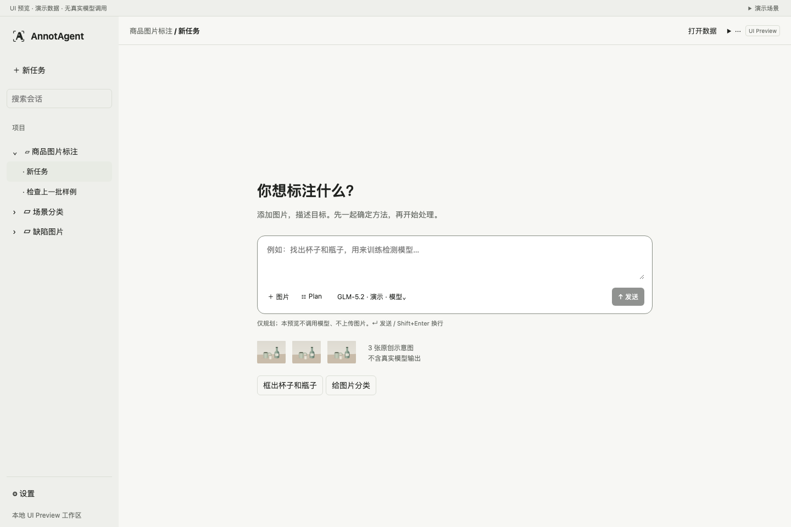
UI Preview / Fixture · 不是 LivePlan 待批准
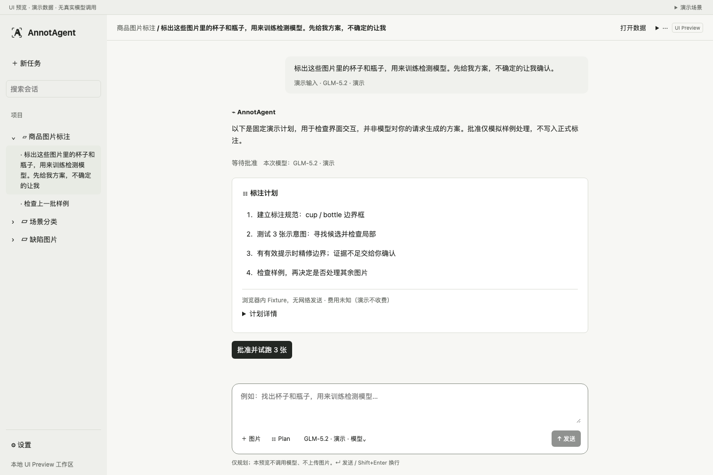
UI Preview / Fixture · 不是 Live模型选择
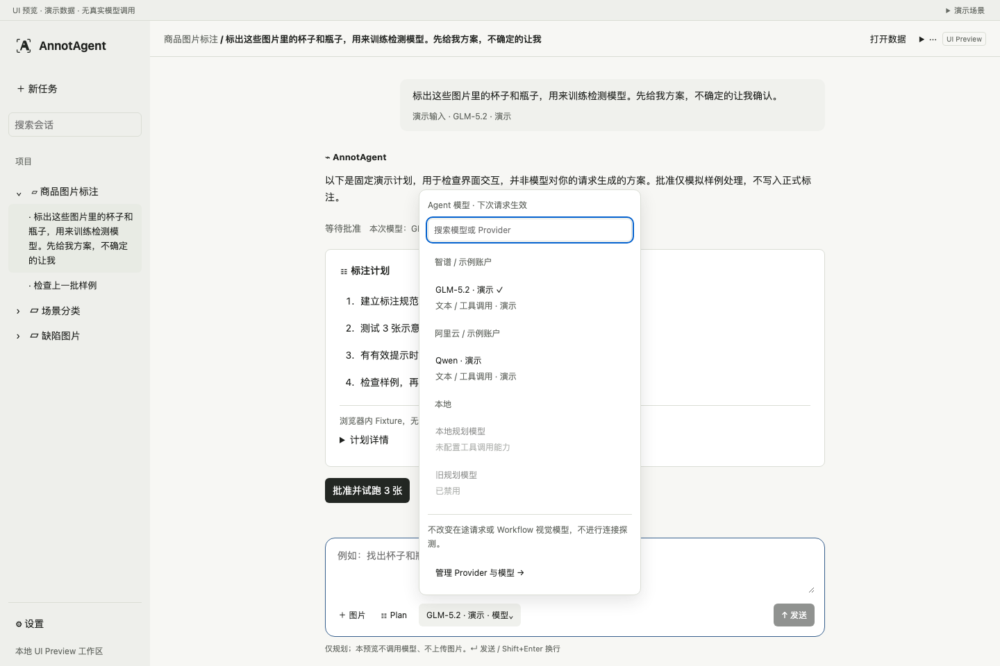
UI Preview / Fixture · 不是 Live执行中与排队输入（模拟）
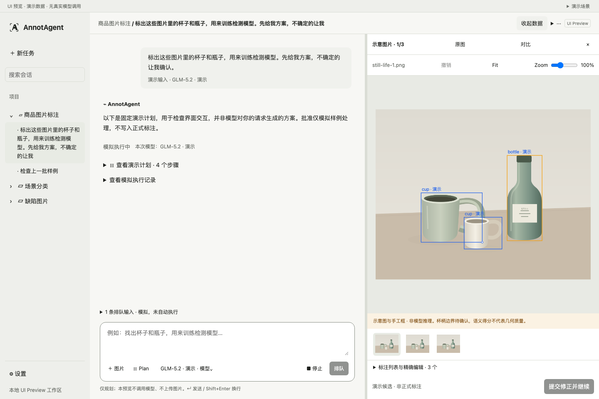
UI Preview / Fixture · 不是 Live停止中（模拟回执）
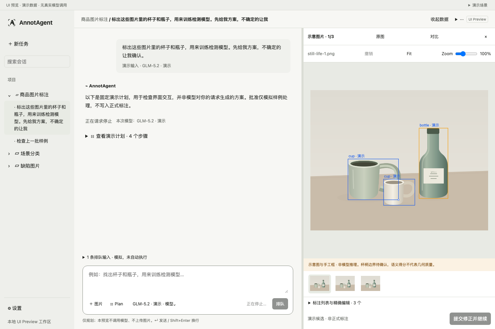
UI Preview / Fixture · 不是 Live已打断与继续入口（模拟）
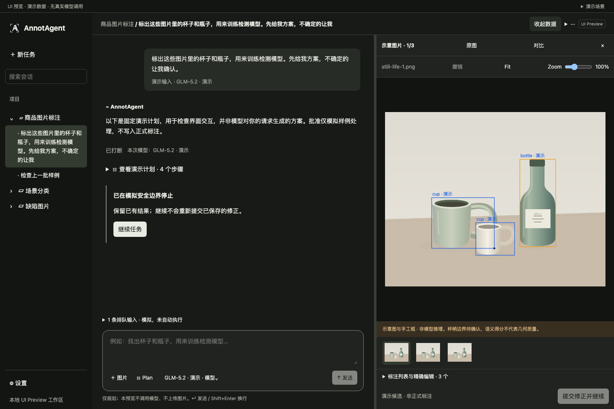
UI Preview / Fixture · 不是 Live图片画布与人工修正（演示候选）
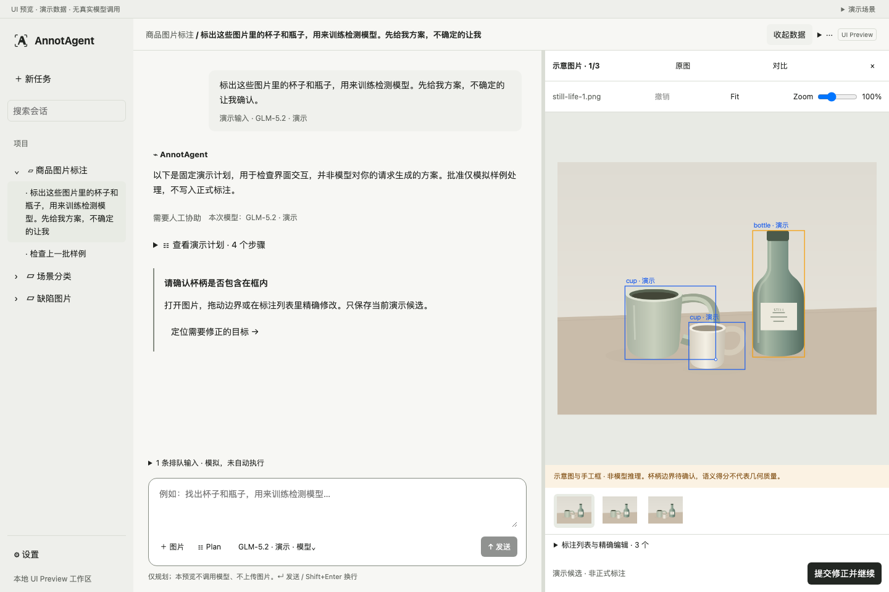
UI Preview / Fixture · 不是 LiveSettings · 通用
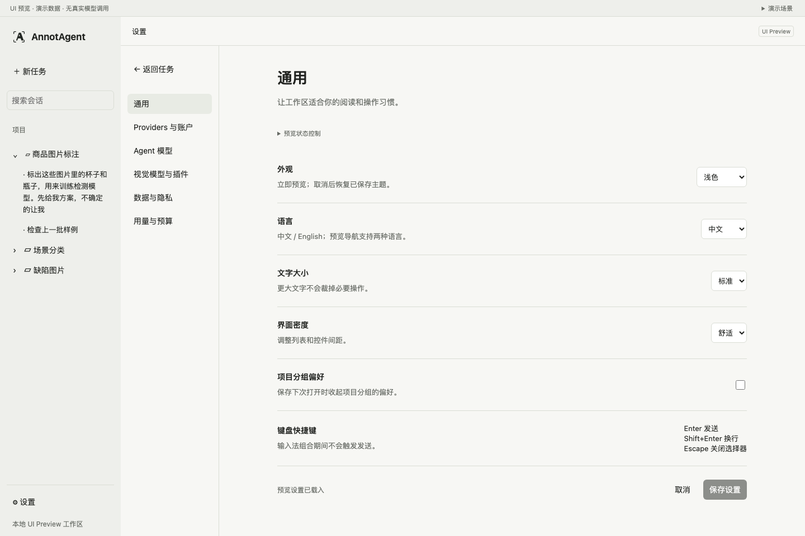
UI Preview / Fixture · 不是 LiveSettings · Providers 与账户
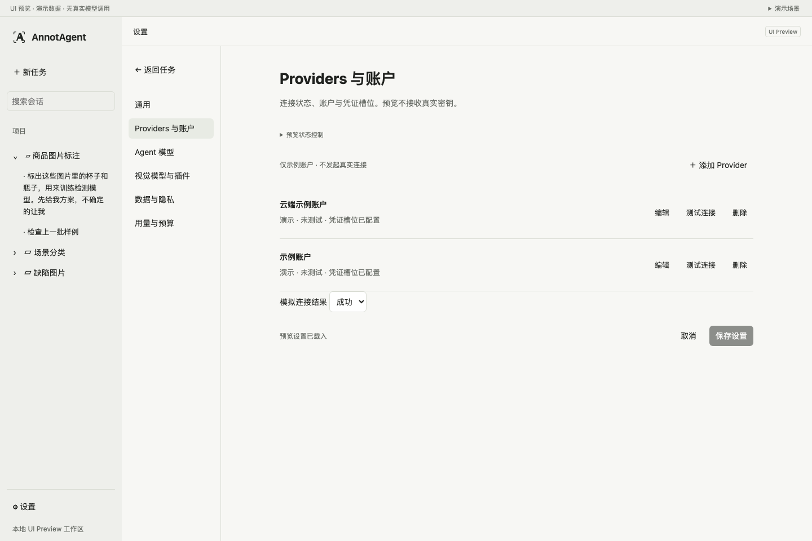
UI Preview / Fixture · 不是 LiveSettings · Agent 模型
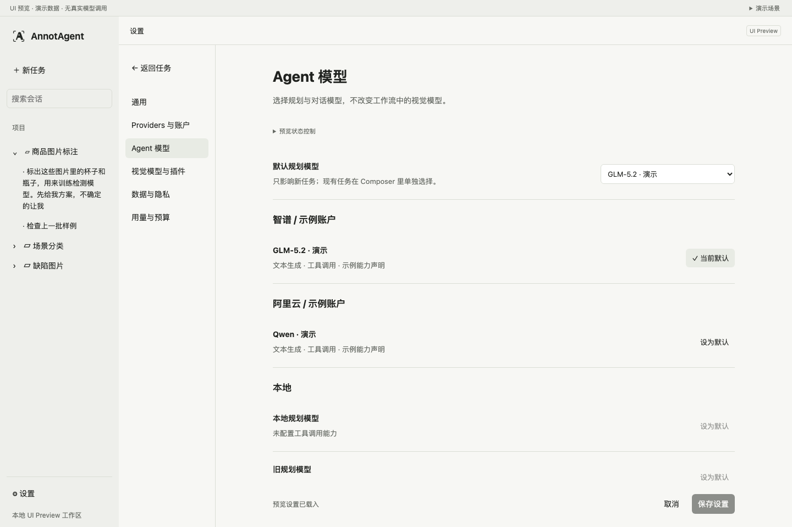
UI Preview / Fixture · 不是 LiveSettings · 视觉模型与插件
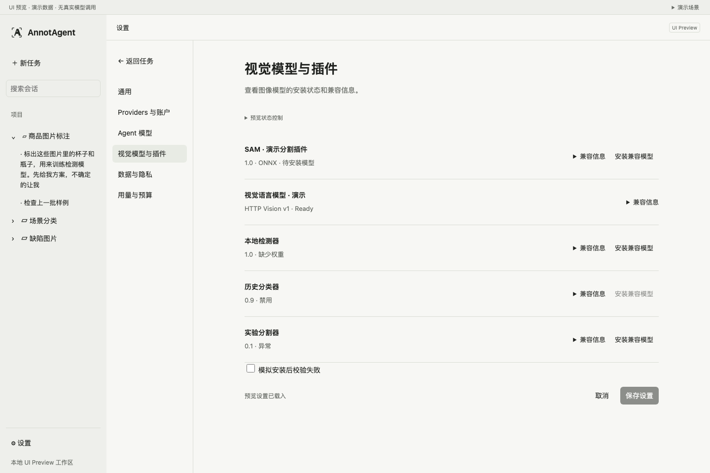
UI Preview / Fixture · 不是 LiveSettings · 数据与隐私
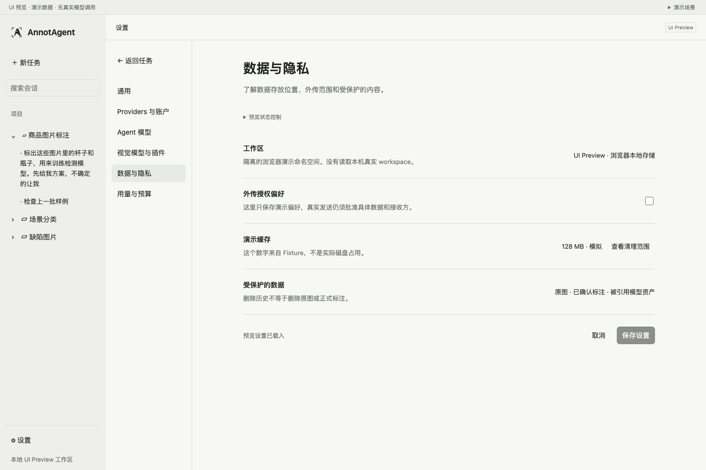
UI Preview / Fixture · 不是 LiveSettings · 用量与预算
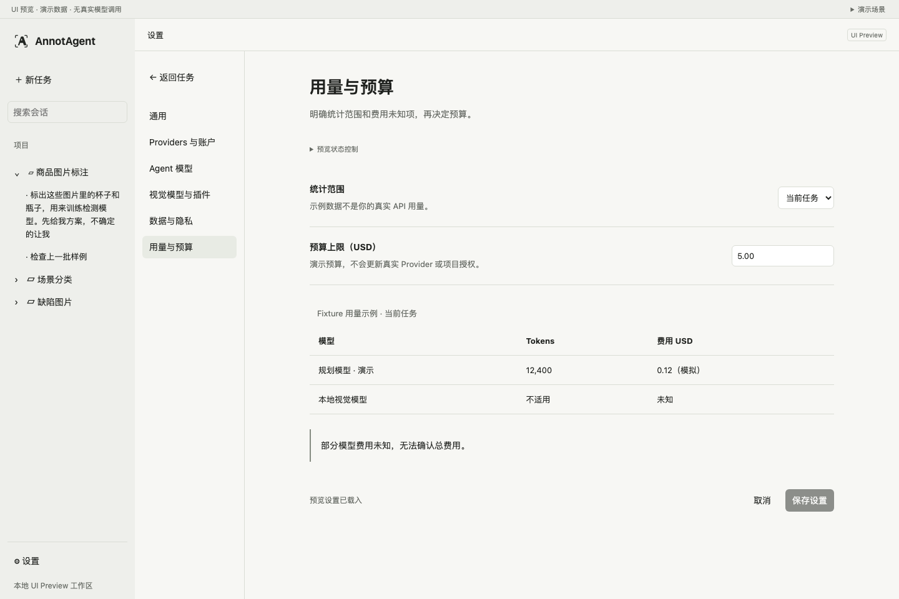
UI Preview / Fixture · 不是 Live演示边界与待确认项
停止、继续、模型安装、连接测试、凭证槽位保存及推理均为演示。人工框修改只存浏览器预览；不写正式标注。排队输入不自动派发。
待确认：侧栏长标题换行、模型列表高度、画布标签字级；英文文案尚不完整。原生 200% 缩放和真人使用尚未验证。
只有收到用户明确的“UI确认，开始集成”才进入后端集成。此前不合并后端、不替换正式入口、不修改 Rust。